User Profile
The User Profile is to view and manage User related information.
Below are the details and functionalities available in User Profile flyout in different sections:
- Tenants
- Roles
- Permissions
- Development Variables
- Logout
Steps to access User Profile:
- Login to the application
- Click on the top most icon(User Profile) on the right
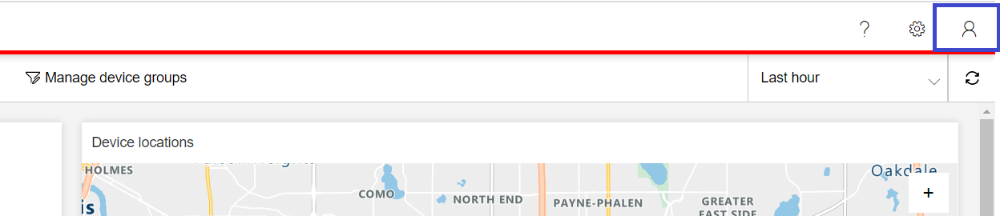 - User Profile flyout opens 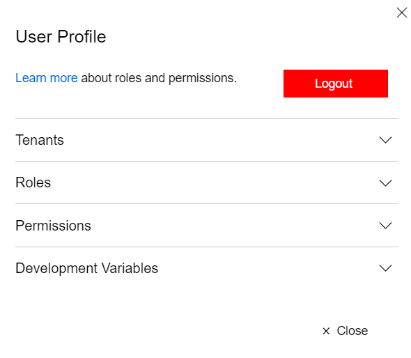
Tenants
This sections shows the list of Tenants to which user is assigned along with other options to manage tenants.
Current Tenant
To view the current Tenant,
- Click on User Profile button, User Profile flyout opens
- Under Tenants section, there is a label that shows current Tenant 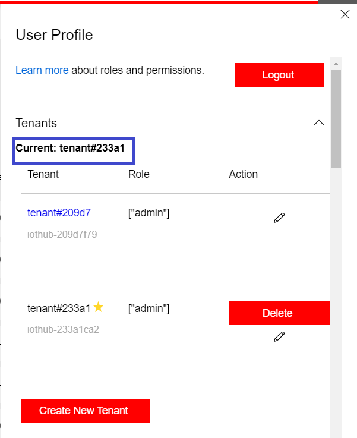
View Tenants
To view the list of Tenants assigned,
- Click on User Profile button, User Profile flyout opens
- Under Tenants section, a table shows the list of Tenants
Following lists the columns of Tenants grid:
| Column Name | Description |
|---|---|
| Tenant | Name of the Tenant |
| Role | The role assigned to the user for this tenant |
| Action | Shows the actions available like Edit and Delete |
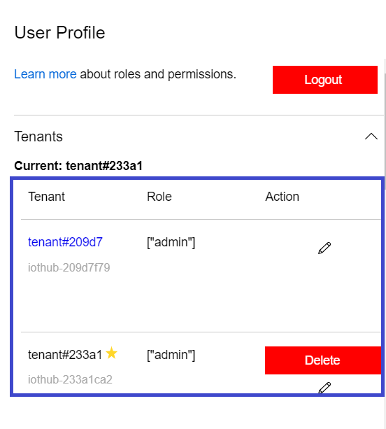
Switch Tenant
A user can switch tenant if there are more than one tenant assigned. To switch the tenant:
- Click on User Profile button, User Profile flyout opens
- Under Tenants section, a table with tenant list is displayed
- For tenants in the list other than current, there will be a link on Tenant name that can be used to switch current tenant
- Click on tenant name link to switch
Ex: From the screenshot below, current tenant is tenant#233a1. Click on tenant#209d7 in order to switch to this tenant.
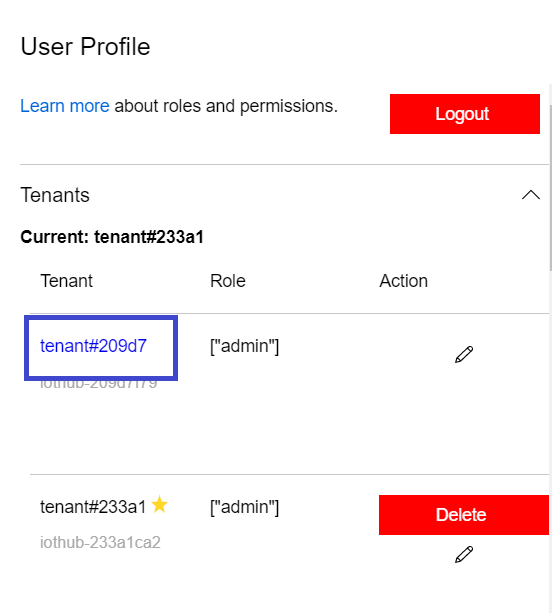 - The application refreshes with switched current tenant
Edit Tenant Name
A user can edit the tenant name by following the below steps:
- Click on User Profile button, User Profile flyout opens
- Under Tenants section, a table with tenant list is displayed
- Against the tenant row click on Edit Action 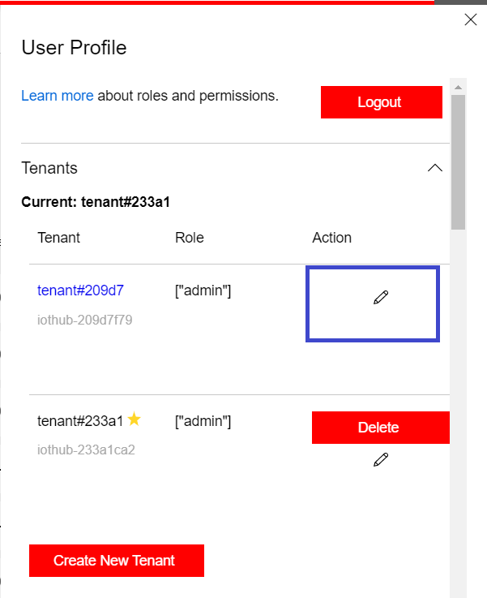
- Tenant Name becomes editable, update the name and click Save 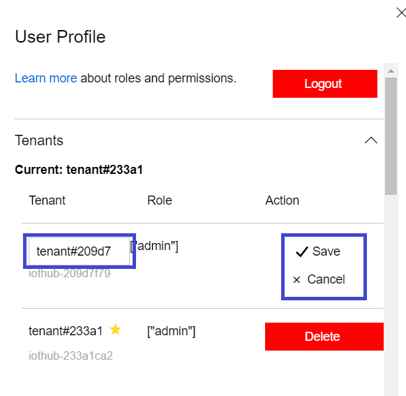
Delete Tenant
A user can delete a tenant by following the below steps:
- Click on User Profile button, User Profile flyout opens
- Under Tenants section, a table with tenant list is displayed
- Against the tenant row to delete click on Delete Action 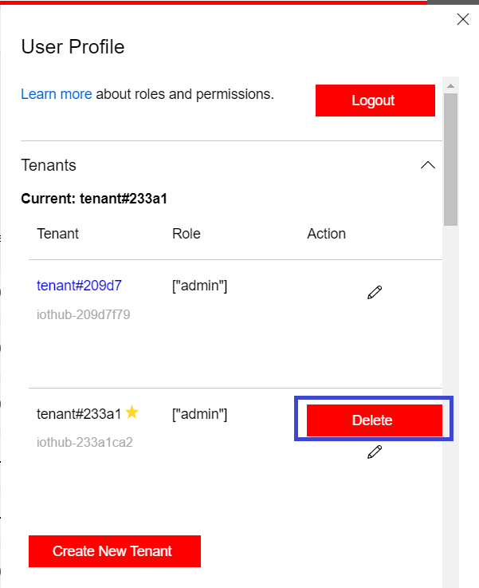
- The tenant is deleted
Note ❌: A tenant once deleted cannot be reversed. A user needs to be extra cautious while deleting a tenant.
Create New Tenant
A user can create a new tenant by follwing the below steps:
- Click on User Profile button, User Profile flyout opens
- Under Tenants section, click button Create New Tenant below tenants list 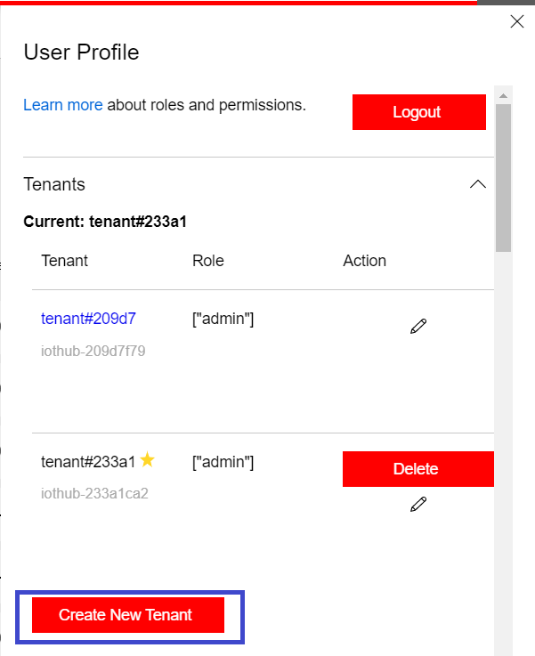
- A new tenant with a unique Tenant Name is created and is added as a new row in the tenant list
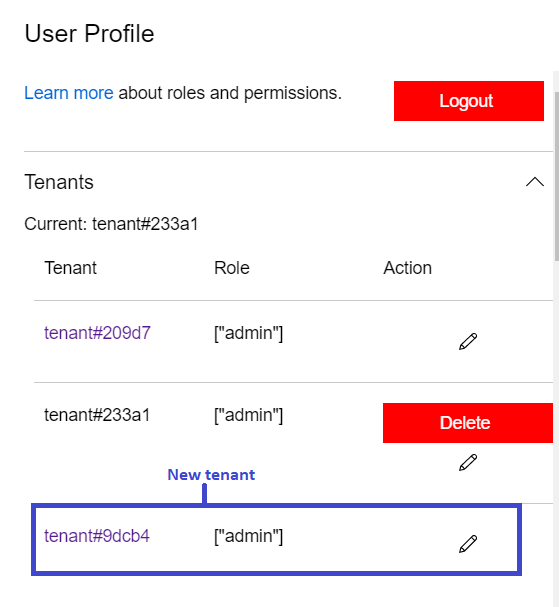 - This tenant will be available to access only after it is fully deployed. This might take a few minutes and below message pops up while trying to access it. 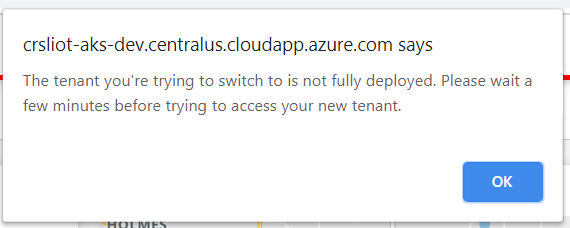
- User should be able to Switch to the newly created tenant after few minutes, once it is fully deployed.
Note ❌: Avoid creating unnecessary tenants as they may result in increasing cost.
Roles
This sections shows the logged in user's Role for current tenant. These roles are assigned while creating a new user.
There are two roles for a remote monitoring solution by default:
- Admin
- Read Only
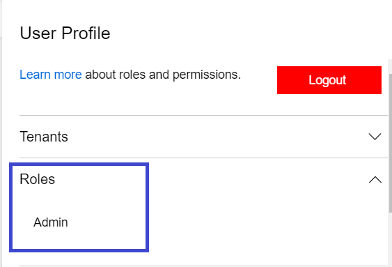
Note: Custom roles can also be added, refer this for more information
Permissions
This section shows the permissions of a user based on the user's role. Any user in the Admin role has full access to the solution, including the following permissions below. A user in the Read Only role will only have access to view the solution. 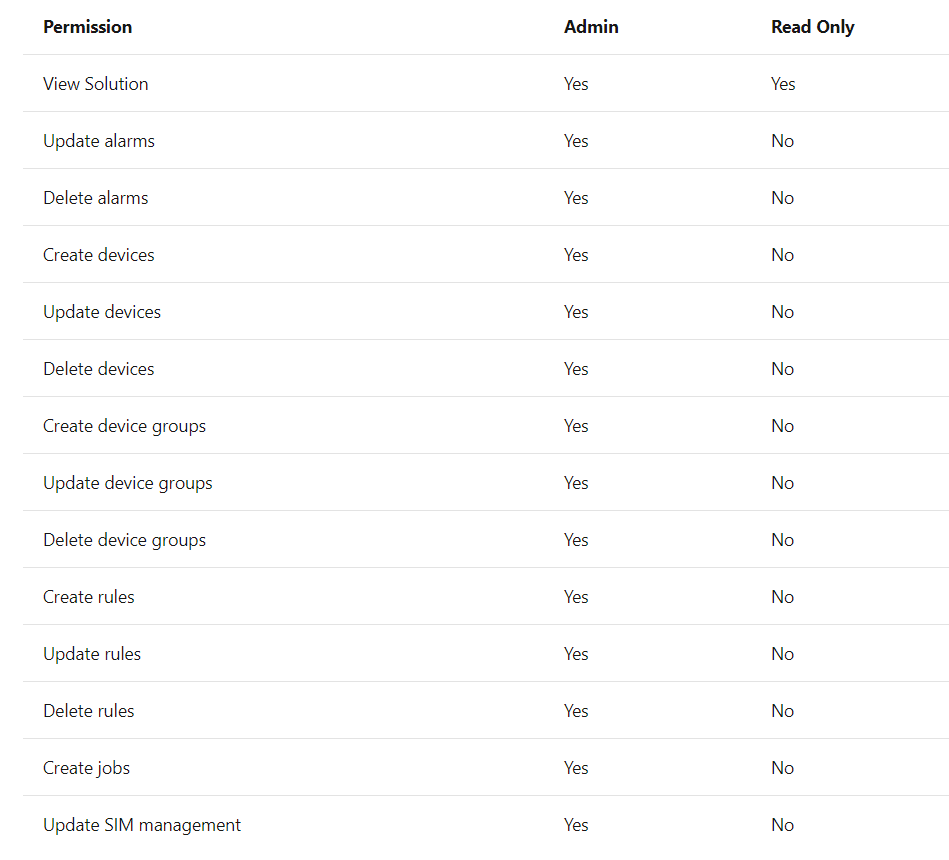
Note: For more information on this, refer role-based access control
Development Variables
This section has user development variables like
- User Token
- Payload information with Username, TenantId, UserRole, available tenants, IsSystemAdmin etc.,
Logout
To logout from the application
- Click on User Profile button, User Profile flyout opens
- Click Logout button 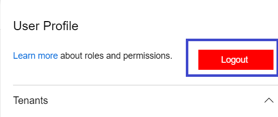